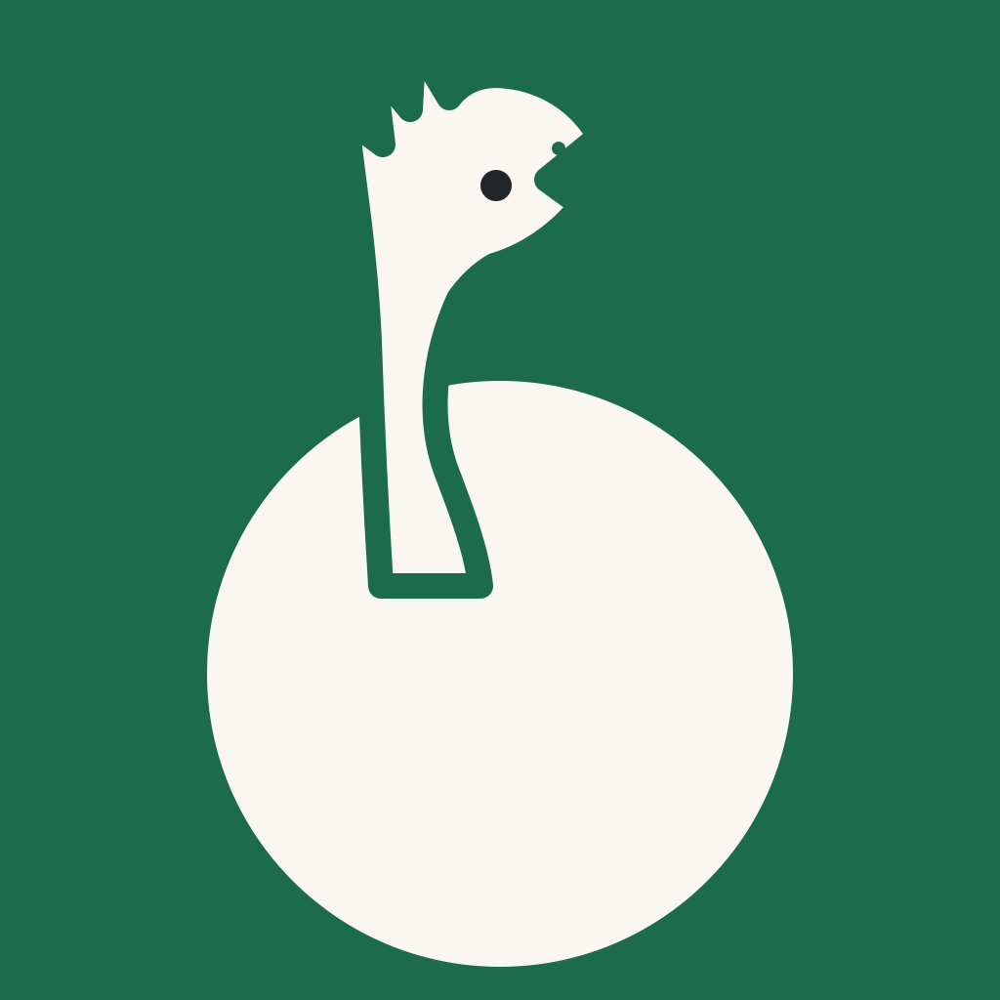
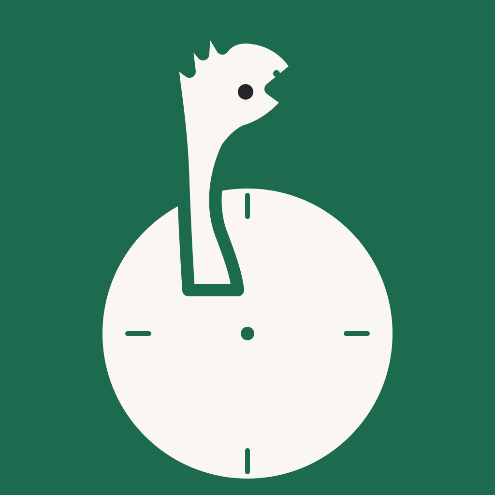
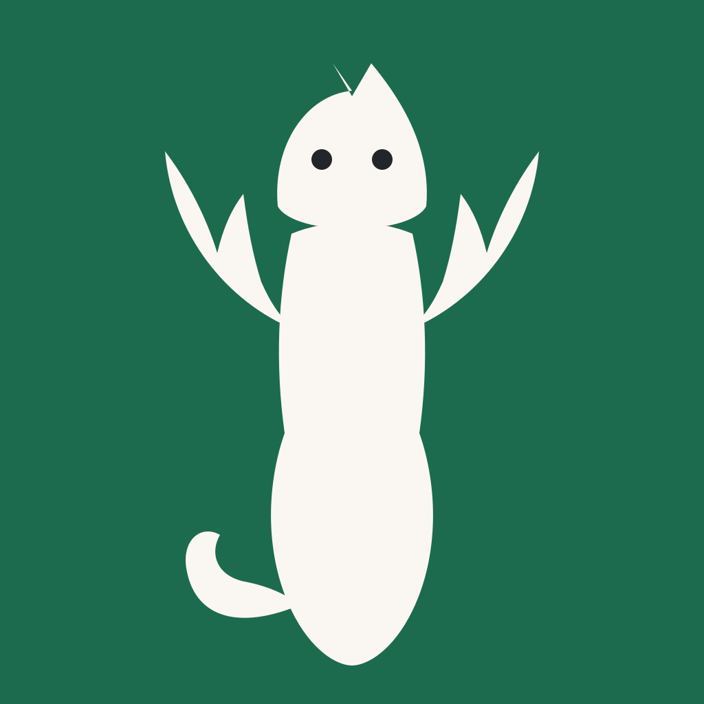

Скіцы для параўнання, не production-асеты: фінальныя зыходнікі для #429 робяцца толькі пасля выбару варыянту і праверкі падабенства па фота фігуркі (у рэпе фота няма). Палітра канона: крэм #FAF7F2 на зялёным #1D6B4F — 6.01:1 (WCAG 1.4.11 ≥ 3:1 для графікі). Тэксту ў іконцы няма.
| Кандыдат | 29 px | 40 px | 60 px | 1024 px | Сутнасць і рызыка |
|---|---|---|---|---|---|
| I1 · Узнятая галава | Галоўны жэст брыфа; чытаецца на 29 px. Рызыка: «адна галава і шыя» яшчэ не прынятая (брыф) — менавіта таму выбар за ўладарам. | ||||
| I3 · Галава па-над колам |  |
Дынаміка «зірнуць далей»; на 29 px кола чытаецца як тыповы круглы значок (рызыка рэпорта I3). Патрэбна зялёная раздзяляльная абводка. | |||
| I3-к · з кампаснымі дзелкамі |  |
Кампасная опцыя. Дзелкі 10 px на 1024 ≈ 0,3 px на 29 px і ≈ 0,6 px на 60 px — на малых памерах знікаюць, кампас не працуе як сімвал іконкі. | |||
| Поўны сілуэт з крыламі (I2) |  |
Крылы робяць фігурку пазнавальнай (брыф); морда, хвост і дэталі губляюцца да ~60 px (рызыка рэпорта I2). Трымаецца як варыянт, калі ўладар захавае крылы. |
Злева — светлы, справа — нейтральны цёмны шпалер. Цёмная тэма прадукту — асобнае рашэнне #436, яго напрамку няма, таму цёмная прэзентацыя іконкі застаецца неправеранай (запіс у выніку). Скворэл iOS і кола Android — сістэмныя маскі, сам файл залишаюцца квадратным без уласнага скруглення.
Напрамак рэпорта: зялёны фон, крэмавая марка з іконкі, слова KUDY асобна. Сістэмная застаўка iOS і Android 12+ — статычная: адзін фон + адна выява без анімацыі (збігаецца з reduced-motion канона); слова KUDY на Android 12+ у сістэмны пласт не ўваходзіць — яго паказвае сама праграма. Фота-варыянт S2 («фігурка ў Гданьску») чакае здымкаў з §3 выніку.
Foreground для adaptive icon — асобны экспарт: толькі крэмавая марка з празрыстасцю, цэнтр у коле 66/108 (пункцір на прэв'ю). Фон задаецца праз backgroundColor #1D6B4F, не малюецца ў foreground-файле. Пункцір — ілюстрацыя зоны, не асет.
| Пара | Суадносіны | Плашка | Вердыкт |
|---|---|---|---|
| крэм #FAF7F2 · зялёны #1D6B4F | 6.01:1 | ≥ 3:1 (1.4.11 графіка) | праходзіць |
| зялёны #1D6B4F · папера #FAF7F2 | 6.01:1 | ≥ 3:1 | праходзіць ( splash на паперы ) |
| гліна #805039 · зялёны #1D6B4F | 1.05:1 | — | забаронена: героя глінянага тону на зялёным не ставіць |
| бурштын #D8A551 · зялёны #1D6B4F | 2.88:1 | ≥ 3:1 | ніжэй плашкі — толькі неістотны дэкор, не сімвал іконкі |
Іншае: сілуэт без унутраных тонкіх дэталяў (вока і ноздра — не нясуць сэнсу самі па сабе); лаўнчар заўсёды мае подпіс назвы праграмы з боку ОС; застаўка статычная — reduced-motion выканана; iOS-іконка без альфы (поўная заливка фонам).